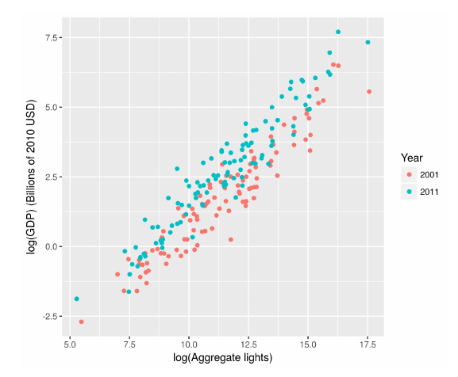
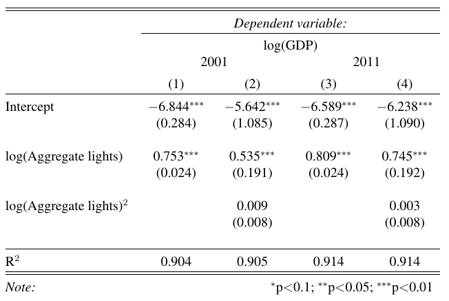
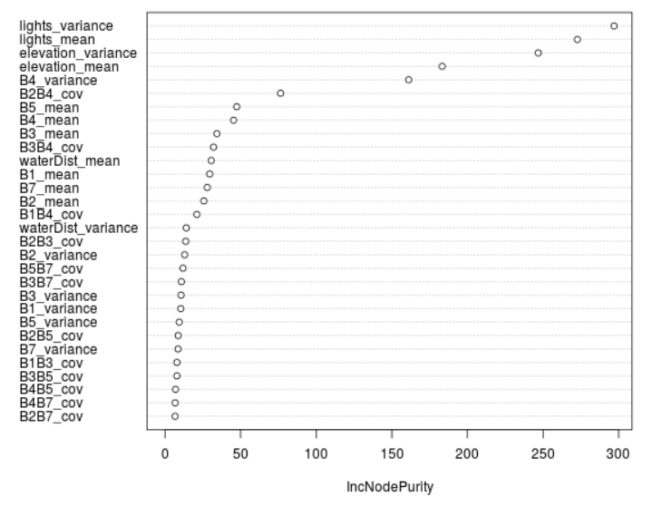
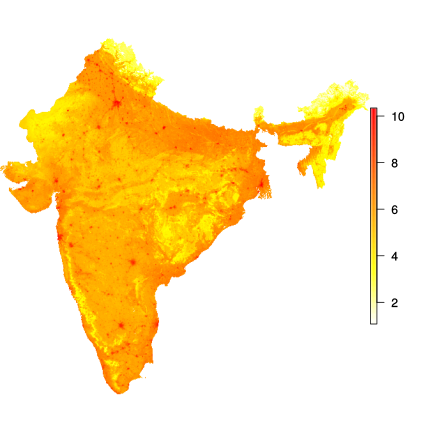
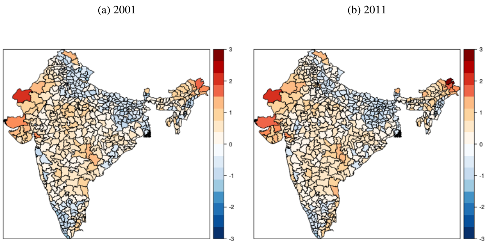
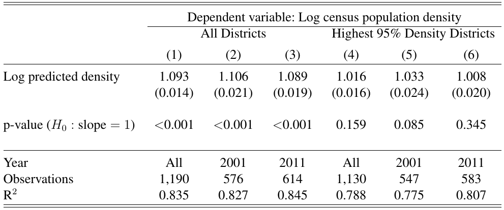

Estimating Regional Inequality and Growth Using Satellite Data
Michael Jerman
Department of Economics
University of Oregon
May 31, 2017
The Time-varying Relationship Between Lights and GDP
Inter-annual Calibration Parameters
Building a Regression Tree
Collect $N$ observations
Building a Regression Tree
Choose a decision rule for one of the covariates
Building a Regression Tree
Partition the data based on the decision rule
Building a Regression Tree
Choose new decision rules for each subset
Building a Regression Tree
Repeat...
Building a Regression Tree
...until each terminal node has one observation
From Trees to Forests
- The standard regression tree is overfit
- Random forests randomize tree along two dimensions:
- Each tree is grown on a bootstrapped sample of size $N$
- At each node, a random subset of covariates are chosen to find the decision rule
Node Impurity
Predicting smaller resolutions
- The random forest algorithm returns an estimated function $\hat{f}(\cdot)$
- For each 1km pixel p, calculate $\hat{f}(S_p)$
- Aggregate the predicted values up to the district level, and regress against known district-level density
Raw Census Data (2011)

Random Forest Population Estimates (2011)
District-level Prediction Error
Prediction Error Regressions
Theil index
$$ T(Y) = \frac{1}{N}\sum_{i=1}^N\frac{y_i}{\bar{y}}\ln\frac{y_i}{\bar{y}} $$$T(Y)$ is subgroup additive:
$$ T(Y) = \sum_{g=1}^G \frac{N^g\bar{y}^g}{N\bar{y}} T(Y^g) + \sum_{g=1}^G\frac{N^g\bar{y}^g}{N\bar{y}}\ln \frac{\bar{y}^g}{\bar{y}} $$